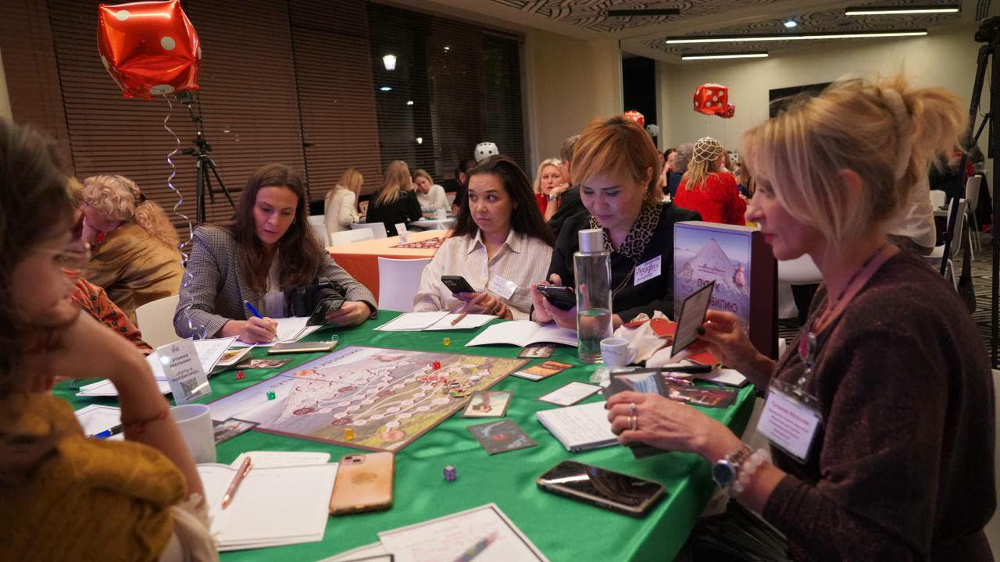
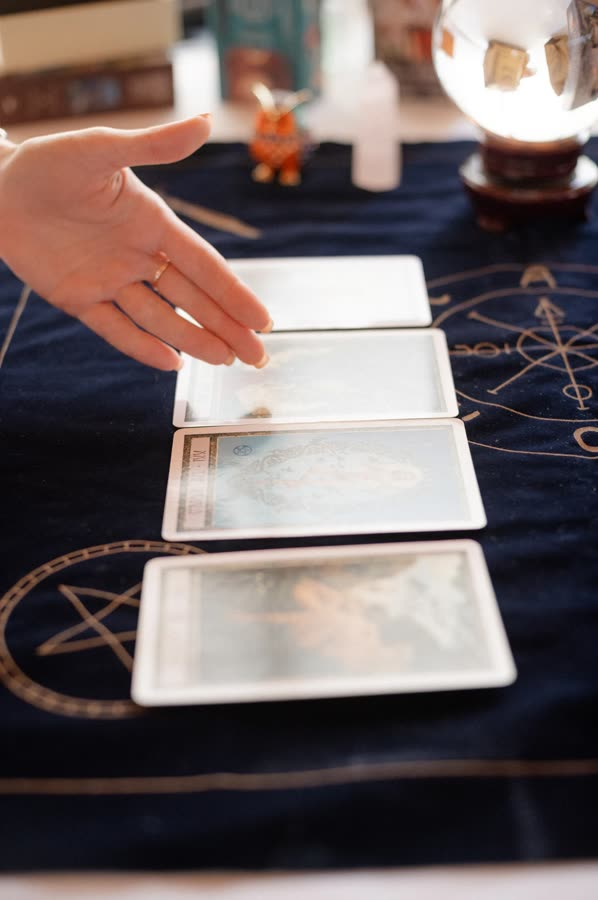
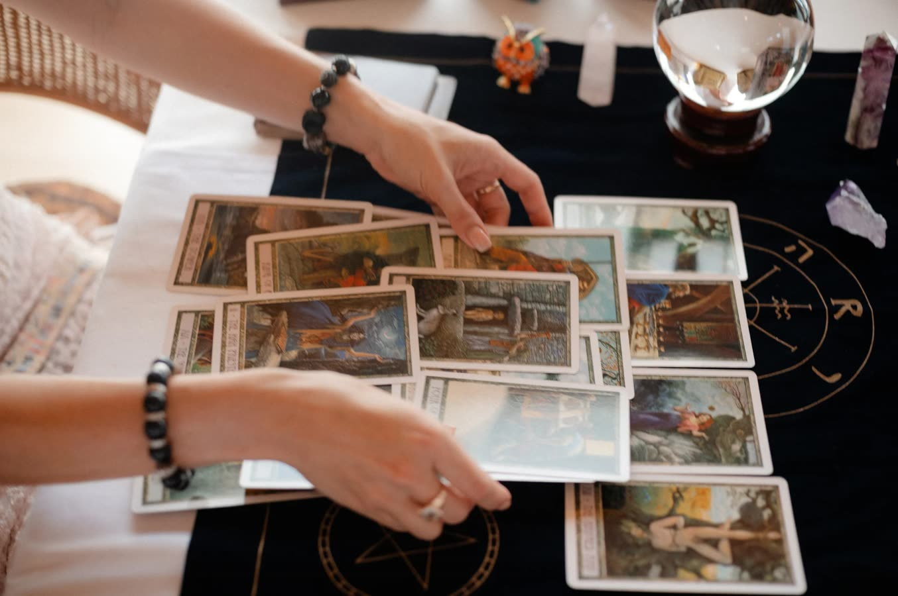
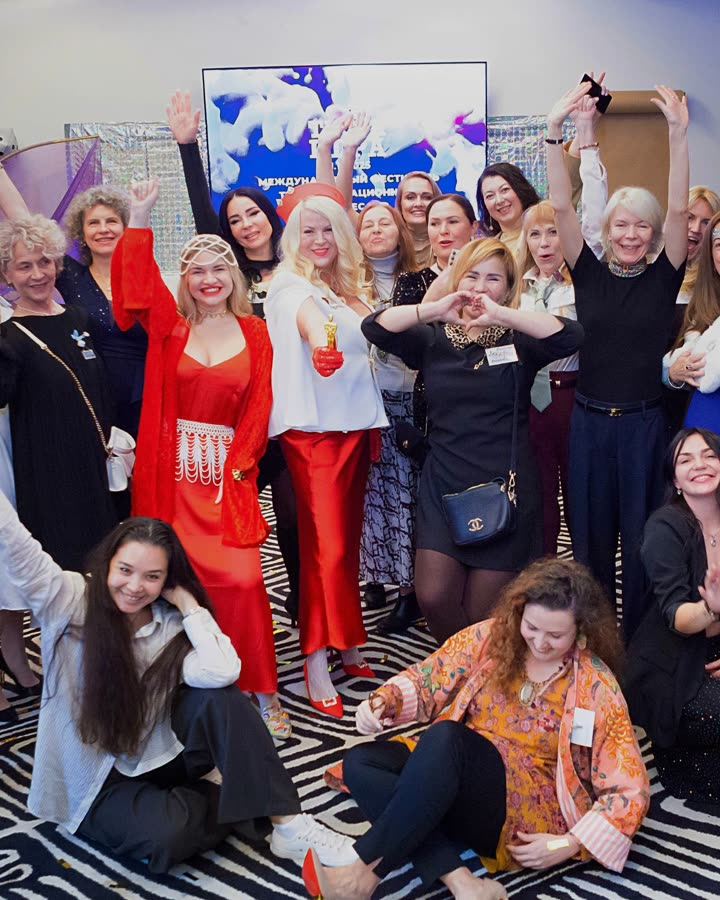
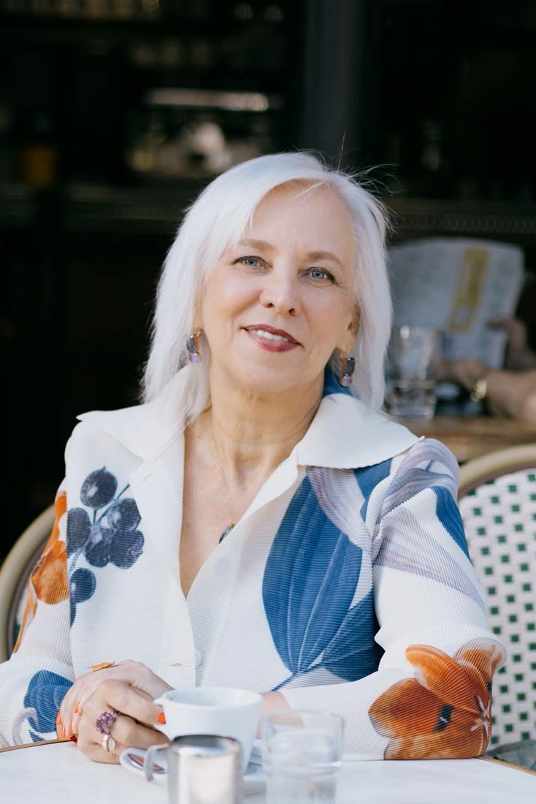
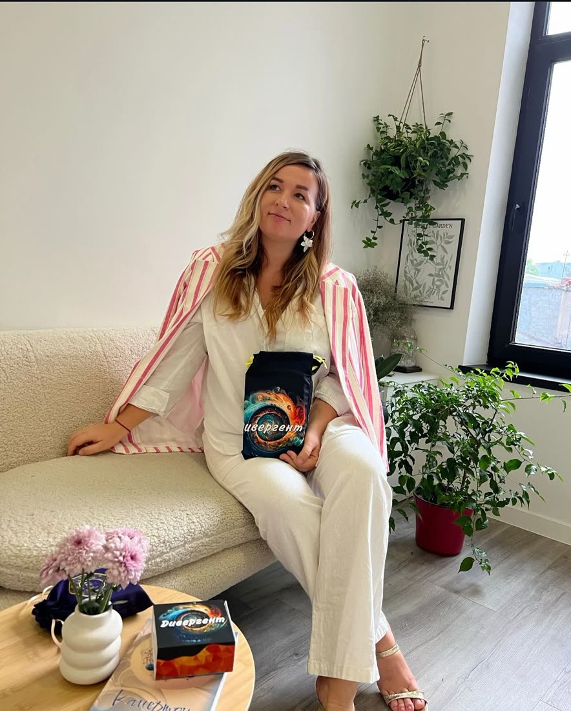
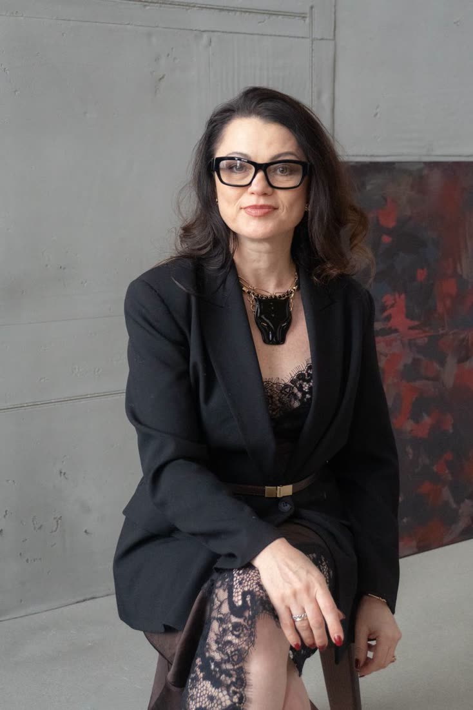

Люди. Свет. Проявленность. Возможности.
Твой момент выйти из тени, услышать себя, раскрыть свой потенциал и позволить миру увидеть, кто ты на самом деле.
Люксембург — место встречи культур, идей и людей, готовых к новому этапу своей жизни.
Хочу стать частью фестиваля



ЗВЕЗДНЫЙ ЧАС — БОЛЬШЕ, ЧЕМ ФЕСТИВАЛЬ — ЭТО ПРОСТРАНСТВО, ГДЕ ТЕБЯ ВИДЯТ.
Это точка сборки экспертов из разных стран Европы и мира. Франция, США, Германия, Ирландия, Испания, Бразилия — мы объединяем сильных.
«Звёздный час» — это пространство встречи людей, которые чувствуют: пришло время проявляться, раскрывать свои таланты, расширять горизонты и создавать жизнь, которая действительно им соответствует.
У каждого свой путь и свой свет.
Здесь не нужно становиться кем-то другим, чтобы быть замеченным. Здесь можно глубже узнать себя, заявить о своих идеях, встретить близких по духу людей и открыть новые возможности.
Мы верим, что настоящая трансформация начинается внутри, но раскрывается в контакте с миром. Иногда одна встреча, один разговор или один смелый шаг становятся началом совершенно новой главы.
Практики и мастер-классы · Трансформационные игры · Экспертные встречи · Новые знакомства · Пространство возможностей.
ТВОЙ ГОЛОС МОЖЕТ ЗАЖЕЧЬ ЧЬЮ-ТО ЗВЕЗДУ.
Ты чувствуешь, что накопленный опыт, знания и твоя авторская методика готовы выйти за пределы индивидуальных консультаций или привычного круга клиентов?
Возможно, пришло время заявить о себе шире — выступить перед новой аудиторией, поделиться своей практикой, представить авторский проект и встретить людей, которым действительно близко то, что ты создаёшь.
Мы приглашаем психологов, коучей, ведущих трансформационных игр, специалистов по телесным практикам, духовному развитию, осознанности и личностному росту стать частью «Звёздного часа».
Твоя уникальность не должна оставаться в тени. Поделись тем, что несёт ценность для других, — и позволь своему профессиональному пути выйти на новый уровень видимости.



Создатели фестиваля
Мы – Юлия, Жюли и Юлия, организаторы фестиваля «Звездный час»
МЫ СОЗДАЁМ ПРОСТРАНСТВО, В КОТОРОМ СВЕТ КАЖДОГО ИМЕЕТ ЗНАЧЕНИЕ.
«Звёздный час» рождается из идеи, что человек раскрывается глубже, когда рядом есть пространство для самовыражения, принятия, вдохновения и настоящего человеческого контакта.
Наша цель — объединить людей, которые не просто ищут новые знания, а готовы применять их в жизни, открывать новые стороны себя, делиться опытом и поддерживать развитие друг друга.
Мы создаём фестиваль, в котором личностное развитие встречается с культурой, внутренний мир — с реальной жизнью, а индивидуальные таланты — с возможностями сотрудничества.
Мы объединяем. Ты раскрываешься!